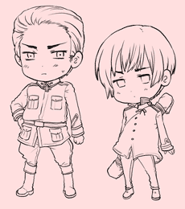
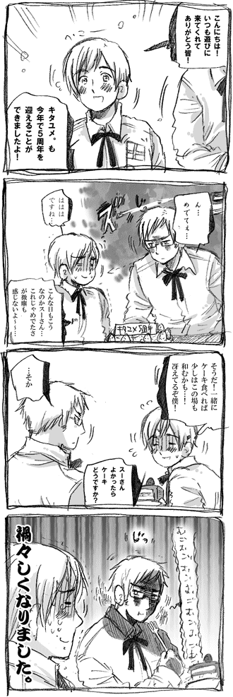
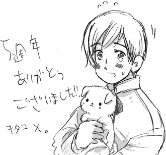
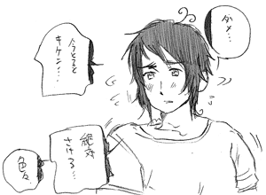
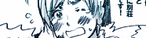
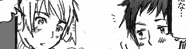
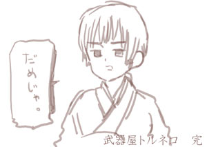
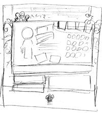
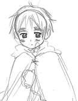
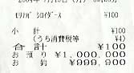

【ニュース】
忘れ物大王がとんでもないもの忘れ物する
しかも超直球なネーミングが素敵。
情報ありがとうございました！
【ニュース】
ビール消費量意外な国が上位ランクイン
（ビール酒造協会さん）アイルランドすごいな。
ドイツ、オーストリアはやっぱりビール大好きですね。
情報ありがとうございました！
【ニュース】
意外と知らない「＠」の読み方と由来（R25jpさん）
色んな見え方があるんだなぁ。シナモンロール可愛い。
情報ありがとうございました！
【ニュース】
スウェーデンコマ割り漫画展、開催中
凄まじいセンスだ。そしてお昼休みがあるのが可愛いですね。
情報ありがとうございました！
【ニュース】
エクスペディア・ベストツーリスト2008
旅行者のイメージ各国ランキング結果発表（エクスペディア）
アメリカ…。
情報ありがとうございました！
ブログにちょこちょこ資料やミニキャラ下絵などUP
【更新】日本追加しました！
携帯待ち受けUPしました！！
第一弾 スイス、ギリシャ
第二段 イギリス
第三段 ロシア・日本
リンクページ更新しました。
【5周年メッセージありがとうございました！】

ありがとうございました！
【キタユメ。5周年！】


皆さんのおかげで5周年を迎えることができました。
ありがとうございます。

記念になぜかギリシャの絵を描こうと
思ったんですが失敗しまりました。がんばります。
【更新】

新大陸アメリカ争奪合戦最後までアップしました！
【メモ】
新大陸アメリカ争奪戦最後までアップ！
やっとアップしました。あと誤字脱字修正しました。
【日記5月号】
【ニュース】
英「えーとゆでたまごって…」
大丈夫なのか！？
情報ありがとうございました。
【メモリアル】
今年は日本とヨーロッパのつながりが深い年だなぁ。
UKJAPAN日英修好通商条約150年記念
日仏交流１５０周年記念
日蘭交流400周年記念
来年２００９年は日本オーストリア１４０周年です。
情報ありがとうございました！
【ニュース】
今年は日本のオランダ年！
今年はオランダとの外交150周年記念、
２００９年は通商関係400年記念になるそうです。
情報ありがとうございました。
【更新】
新大陸アメリカ争奪合戦
UPしました。
【壁紙】
Allied
forces壁紙配布中
えらい時間かかってしまいましたが何とかUP！
【ニュース】
 リトアニアなんかすごいもん作った
リトアニアなんかすごいもん作った
恐怖の三時間取調べ。マゾすぎるよ！！
世界の１９のおかしな法律
(デジタルマガジンさん）
どうしてもパンツはかせたいフィンランドかわいすぎる。
情報ありがとうございました。
【更新】

会長さん漫画UP!
ずっと描きたかったこのコンビのゆるすぎる話です。
【おしらせ】
今日も微妙に今までのページなど改装しました！
漫画ページの小さい漫画群が見やすくなりました。
あと現在改装中につき一時的に
見られなくなっているマンガがあります。
【メモ】
さてやっと誉会長漫画アップです！
力がなければ頭を使えばいいじゃないを地で行く眼鏡。
■地味な更新ばかりなので■

今日は漫画ページ
を色々といじってみました。
漫画ページのTOPに戻ってしまうのを修正。
あと今のデザインにしてみました。
それから地味な更新ばかりなのでブログに色々UP。
新しいブログは機能が色々ついてて使い勝手いいな。
引っ越しまで完備してるのがすごい！
>竹林を命名されているブログなのですが
読み方は「たけばやし」か「ちくりん」どちらでしょう？
はい、これは「ちくりん」です。
どうしても「リン」をつけたかったため
ブログのような七輪か竹林かヘンチクリンか鏡音リン
にしようと思い現在の名前になりました。
【ニュース】
アメリカ人「日本のカレー大好き！」
アメリカ人が日本のカレーについて熱く語っています。
これ近所なので今度食べに行こうかな。
情報ありがとうございました。
【今日の更新！】
現在発掘作業中
多くなってきたので各漫画ページに色々
ゆんゆんマンガやノマル漫画など復活させました。
【わらび。】
そういえばサイトのロゴ新しくしてみました。
あとはインデックスに、ヘタリアページや
きたこーの微調整といったところ。
もうそろそろ長かった改装週間も終わりです。

よしあとひと踏ん張り！がんばるぞー！
後微妙にゆんゆんマンガなど復活しています。
良かったら見てみてください。
■発掘作業■
現在サイトの発掘、整理整頓中。
それでフォルダあさってたら色々出てきました。

学ヘタのセーシェルイベントCG下絵。

つい最近の。アメリカンカントリー万歳。

ちびりす。
【おまけ】
クリスマスフラッシュ：フラッシュファイルです

おかんがもらったレシート。
|